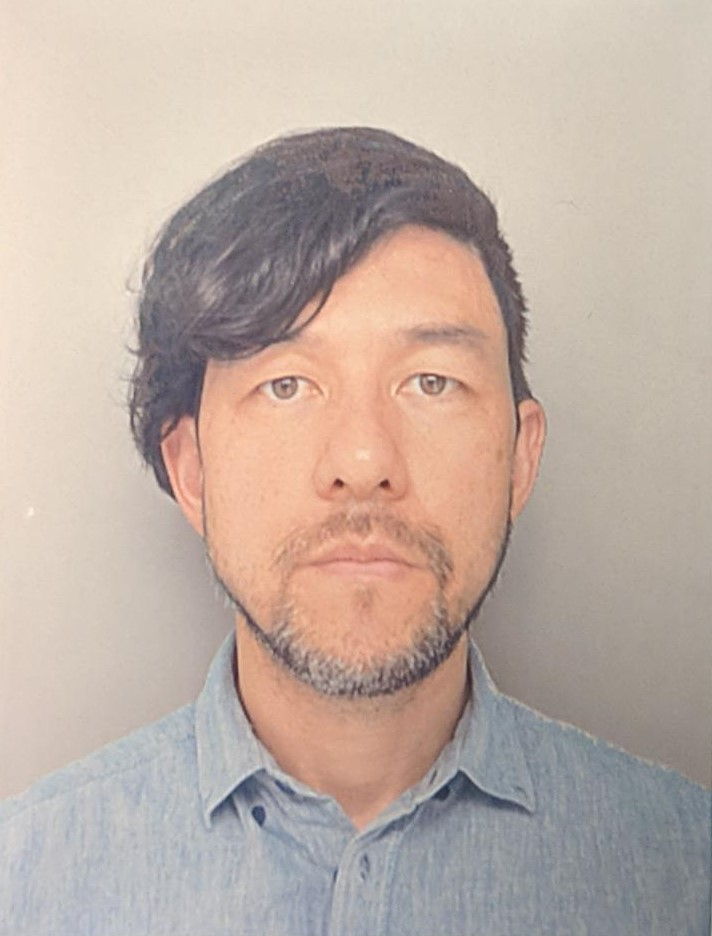

C. Eduardo T. Kokubo

Summary
I am a brazilian guy living in Japan since 2016. My wife and me
came to Japan in order to make money to go to study in Canada. But
this plan did not work, and now I am studying Web Development online,
trying to acquire new skills because I want to switch my career.
Nowadays I work as a Truck Driver, and I am planning to start my new
Web Developer career by 2024, first semester if possible.
Education
- 2023 - Web Development Bootcamp 2023 - Udemy - Dr. Angela Yu
- 2023 - Programming Logic and Algorithms - Udemy - Dr. Nelio Alves
- 2012 - Cinema Production Advanced Certificate - Faculdade de Artes do Paraná - Brazil
- 2006 - Bacharel in Music Production - Universidade Federal do Paraná - Brazil
- 2005 - Bacharel in Music Education - Universidade Federal do Paraná - Brazil
Work Experience
- Truck Driver at Zero Distance (OD) Co.Ltd.
January 2023 - Present
- Operate and Drive straight trucks;
- Oversee condition of vehicle and inspect tires, lights, brakes, cold
storage and other equipament;
- Load and Unload goods;
- Drive for long hours and long distances in a daily basis;
- Material Handler at Furukawa Co.Ltd.
June 2017 - January 2020
- Responsible for choose, transport and install new Optical Fiber coils
in the Test Machines;
- Responsible for maintaining those machines working 24/7;
- Register in-out of materials from other sections of the factory;
- Operate machines in order to apply a set of quality tests in Optical Fiber;
- Machine Operator at Sharp.Ltd.
November 2016 - June 2017
- Feed and Operate Machines in order to apply a set of quality tests in eletronic
parts of a smartphone;
- Fill all the content related to what kind of materials and tests are being done;
- Video Editor at SENAC SP
September 2013 - January 2016
- Organize and name all the files in the project;
- Edit and manipulate Distance Education Videos according to script;
- Edit and manipulate photos and audios;
- Director of Photography in Short Movies
January 2012 - June 2015
- Operate Cameras, Lights and Record Gears;
- Responsible for what kind of cameras, lens, lights, gears etc. will be used
in order to reach the desire of the Director of the Movie/Script;
- Be in direct contact with the Director, Art Director, Actors and Actress, Production
and everithing related to Cinematography of the movie;
Skills
- Punctuality: ⭐ ⭐ ⭐ ⭐ ⭐
- Focus: ⭐ ⭐ ⭐ ⭐
- Problem Solving: ⭐ ⭐ ⭐ ⭐
- Organizational Skills: ⭐ ⭐ ⭐ ⭐
- Truck Driving Skills: ⭐ ⭐ ⭐ ⭐
- Adobe Premiere: ⭐ ⭐ ⭐ ⭐
- Adobe After Effects: ⭐ ⭐ ⭐
- Adobe Photoshop: ⭐ ⭐ ⭐
- Apple Final Cut: ⭐ ⭐ ⭐
- Microsoft Office Suite: ⭐ ⭐ ⭐
Awards and Certifications
- Programming Logic and Algorithms - Udemy - Dr. Nelio Alves (October 2023)
- Cinema Production Advanced Certificate - Faculdade de Artes do Paraná (2012)
- Bacharel in Music Production - Universidade Federal do Paraná (2006)
- Bacharel in Music Education - Universidade Federal do Paraná (2005)
Other
My Hobbies
Contact Me